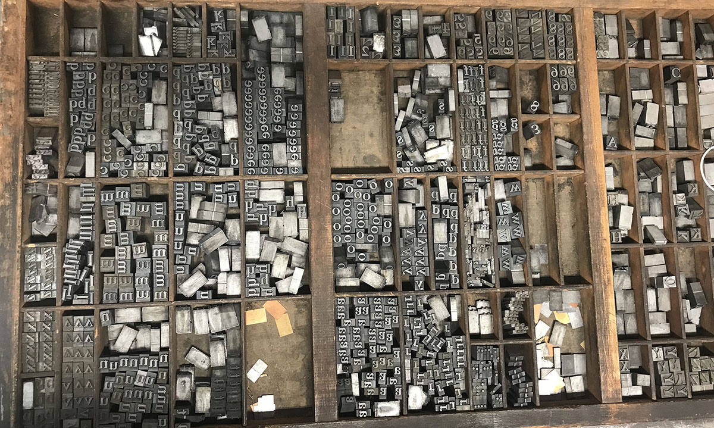
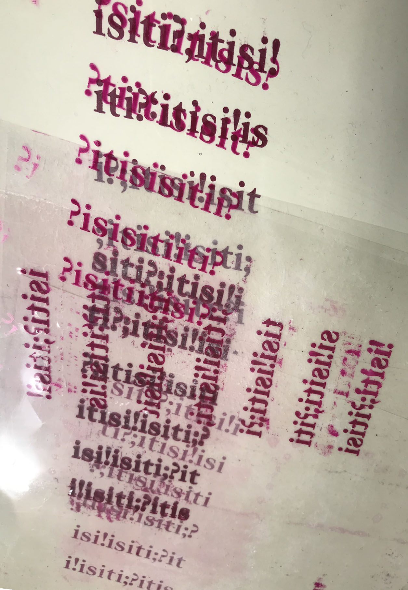
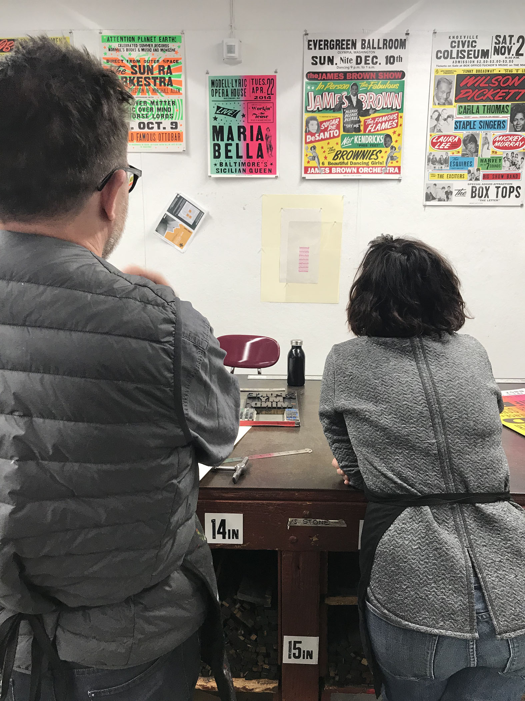
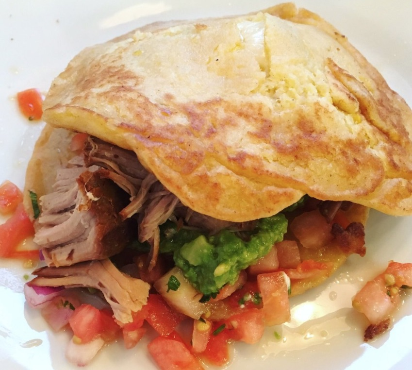
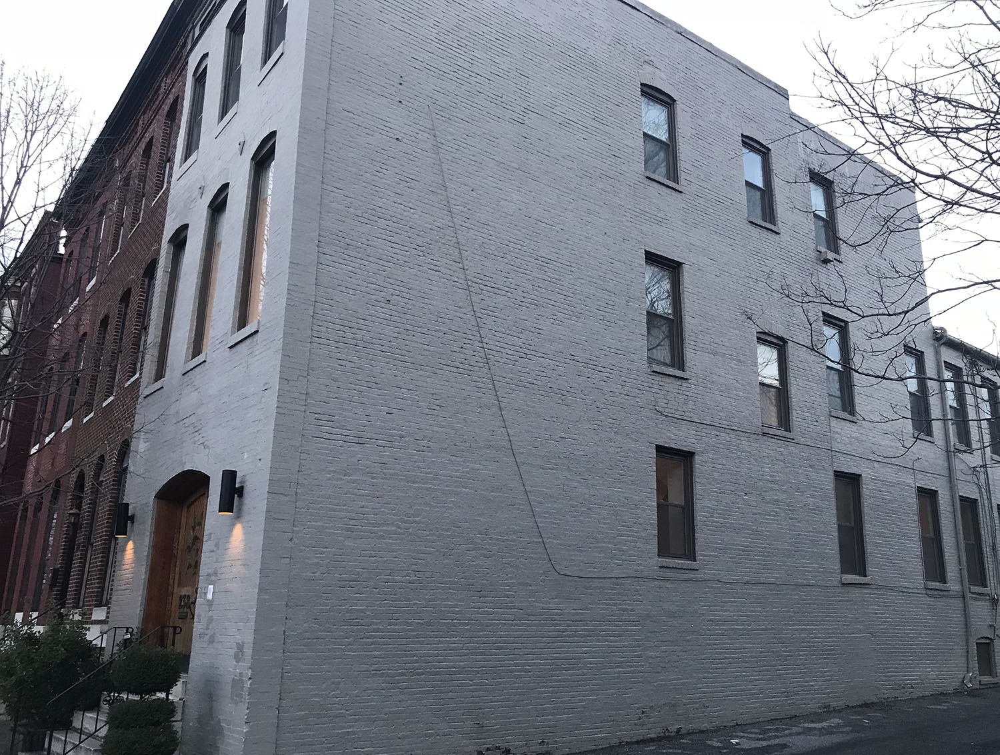
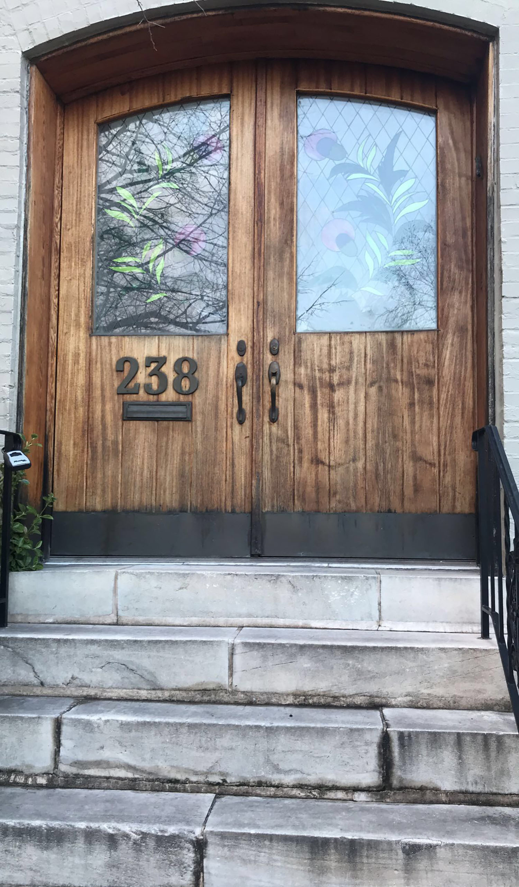

Midday
12pm-4pm
12pm
Typsetting Lead Type
The project entitled 'The James Sienna Project' is a project that a team of us did over the course of two days to create two palindromes. A palindrome is a word, phrase, or sequence that reads the same backward as forward.

1pm
Proofing, Proofing ,Proofing
 
2pm
Lunch Time!
A tamale cake from On The Hill Cafe is such a treat! I got this good lunch free of charge this Wednesday because I was workign with the team of people on the James Sienna project!

3pm
Making Vision Boards with my co-workers!
I led a Vision Board making program with my team of co-workers! I thought it would be important to solidify the importance of focusing on the future and keeping your goals in the back of your mind always, and if you keep focus, your goals are likely to manifest through the actions that you take.
4pm
Touring a House on Wilson St! The Hunt for a Home Next Year Begins!
This house was beautiful, honestly this was a house I pictured myself in years from now and I really enjoyed touring it; unfortunately, it's already been taken now.
 